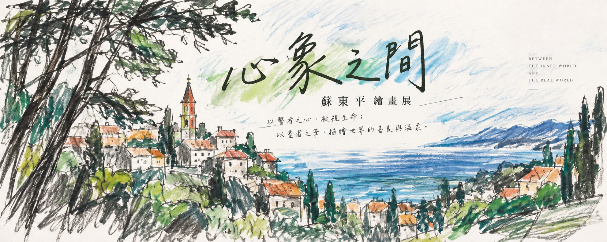
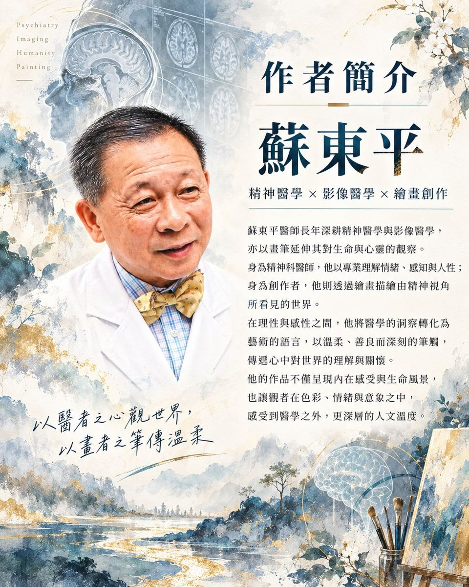

SCROLL
About the Artist
醫者看見腦，
醫者看見腦，
畫者看見心。
蘇東平長年深耕精神醫學與腦影像領域。臨床與研究，使他習慣在表象之外，理解情緒、感知與人的內在世界；而當他拿起畫筆，這份凝視離開診間與影像，走入城市、山海、旅途與日常。
這些作品不追求精準複製眼前的景物，而更像是一段段被記住的感受：線條有時急促、有時安靜，色彩偶爾只在灰階中留下幾筆，像情緒在理性世界裡留下的痕跡。
「以醫者之心理解生命，
以畫者之筆傳遞對世界的善良與溫柔。」
Curatorial Statement
心象之間
「心象」不是單純的風景，而是景物經過記憶、情緒與觀看之後，在心裡留下的形狀。
這場展覽將「精神醫學的凝視」與「旅途中的速寫」放在同一個空間裡。它們看似分屬科學與藝術，卻都在做相似的事——試著理解眼前看得見的表象，以及那些尚未被說出的內在。
01
凝視
從觀察開始，讓景物在紙上慢慢顯影。
02
感知
不只描繪形體，也保留當下的情緒與溫度。
03
記憶
旅行片段成為個人記憶，也成為時間的證詞。
04
溫柔
用不喧嘩的線條，看待人與世界的複雜。
Selected Works
作品集
先選擇一段季節旅程，再沿著畫框裡的光與手寫題記，一幅一幅慢慢觀看。
T. P. SU
01 / 24
Between the Inner World and the Real World
在心與世界之間，
在心與世界之間，
留下觀看的痕跡。
有些風景被相機保存，有些被記憶改寫。東平選擇用紙與筆，把當下留在介於真實與心象之間的位置。
— T. P. Su